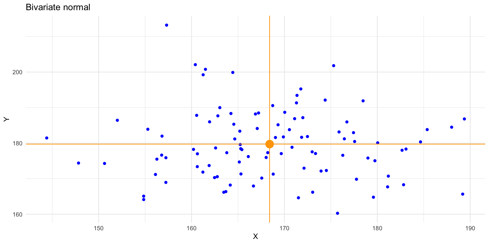
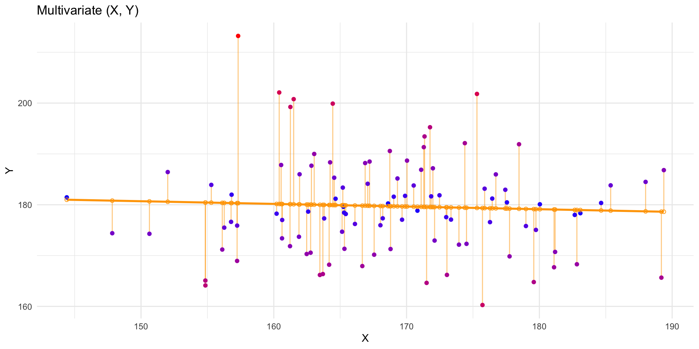
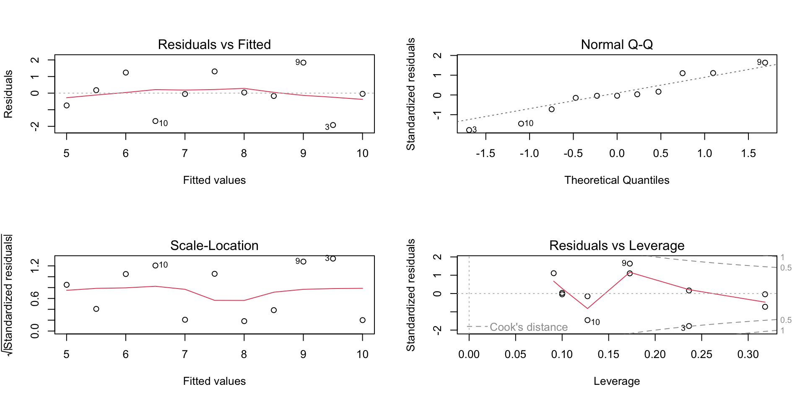
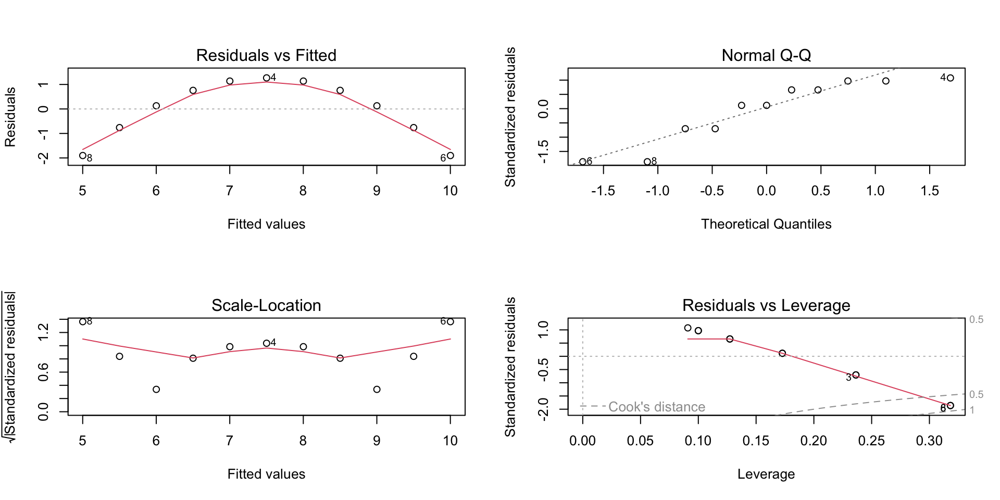
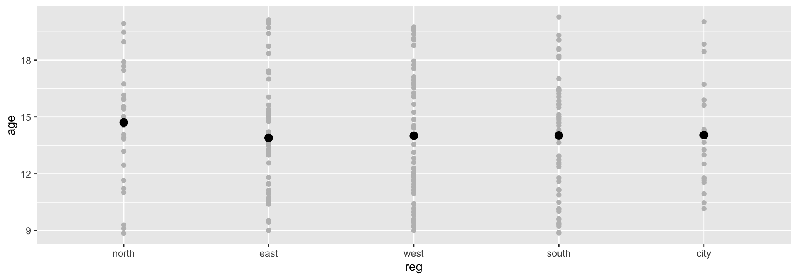
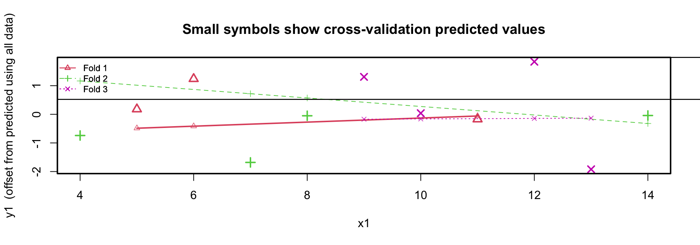
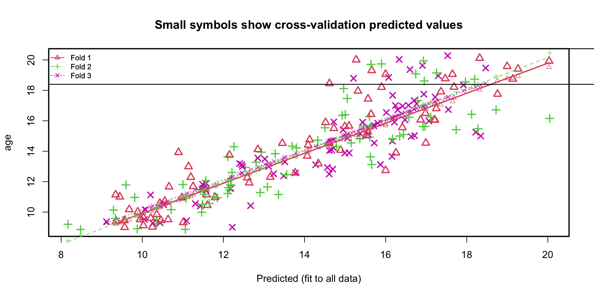
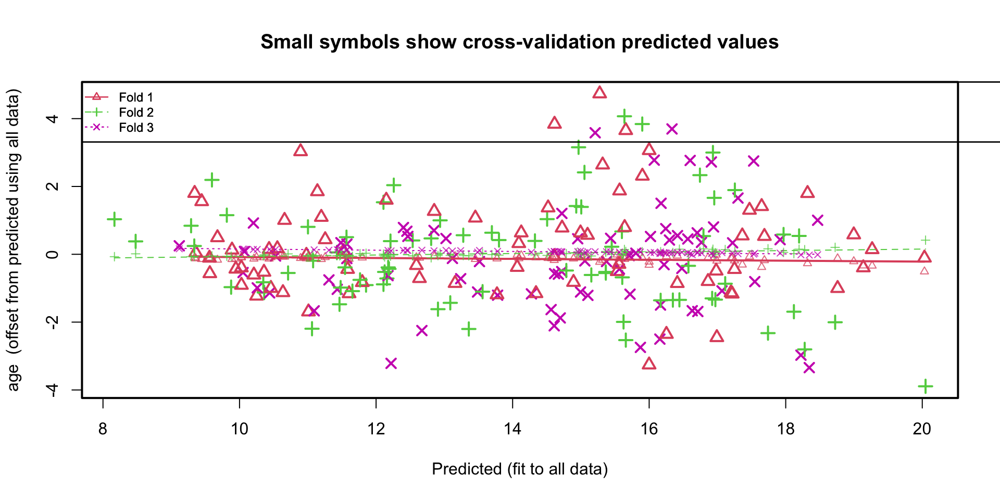
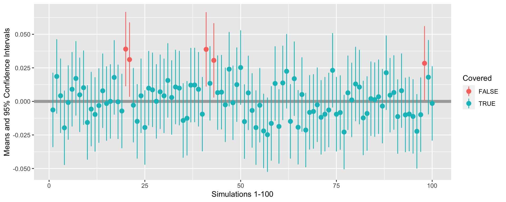

How wrong may a useful model be?
Gerko Vink
Methodology & Statistics @ Utrecht University
December 9, 2022
This lecture
the linear model
assumptions
model fit
model complexity
cross validation
We use the following packages
The linear model
Notation
The mathematical formulation of the relationship between variables can be written as
\[ \mbox{observed}=\mbox{predicted}+\mbox{error} \]
or (for the greek people) in notation as \[y=\mu+\varepsilon\]
where
- \(\mu\) (mean) is the part of the outcome that is explained by model
- \(\varepsilon\) (residual) is the part of outcome that is not explained by model
Univariate expectation
Conditional expectation
Assumptions
The key assumptions
There are four key assumptions about the use of linear regression models.
In short, we assume
The outcome to have a linear relation with the predictors and the predictor relations to be additive.
- the expected value for the outcome is a straight-line function of each predictor, given that the others are fixed.
- the slope of each line does not depend on the values of the other predictors
- the effects of the predictors on the expected value are additive
\[ y = \alpha + \beta_1X_1 + \beta_2X_2 + \beta_3X_3 + \epsilon\]
The residuals are statistically independent
The residual variance is constant
- accross the expected values
- across any of the predictors
The residuals are normally distributed with mean \(\mu_\epsilon = 0\)
A simple model
Visualizing the assumptions
Visualizing the assumptions
Model fit
A simple model
Call:
lm(formula = age ~ reg)
Coefficients:
(Intercept) regeast regwest regsouth regcity
14.7109 -0.8168 -0.7044 -0.6913 -0.6663 Group.1 x
1 north 14.71094
2 east 13.89410
3 west 14.00657
4 south 14.01965
5 city 14.04460Plotting the model
Model parameters
Call:
lm(formula = age ~ reg)
Residuals:
Min 1Q Median 3Q Max
-5.8519 -2.5301 0.0254 2.2274 6.2614
Coefficients:
Estimate Std. Error t value Pr(>|t|)
(Intercept) 14.7109 0.5660 25.993 <2e-16 ***
regeast -0.8168 0.7150 -1.142 0.255
regwest -0.7044 0.6970 -1.011 0.313
regsouth -0.6913 0.6970 -0.992 0.322
regcity -0.6663 0.9038 -0.737 0.462
---
Signif. codes: 0 '***' 0.001 '**' 0.01 '*' 0.05 '.' 0.1 ' ' 1
Residual standard error: 3.151 on 218 degrees of freedom
Multiple R-squared: 0.006745, Adjusted R-squared: -0.01148
F-statistic: 0.3701 on 4 and 218 DF, p-value: 0.8298Scientific notation
If you have trouble reading scientific notation, 2e-16 means the following
\[2\text{e-16} = 2 \times 10^{-16} = 2 \times (\frac{1}{10})^{-16}\]
This indicates that the comma should be moved 16 places to the left:
\[2\text{e-16} = 0.0000000000000002\]
Is it a good model?
Analysis of Variance Table
Response: age
Df Sum Sq Mean Sq F value Pr(>F)
reg 4 14.7 3.6747 0.3701 0.8298
Residuals 218 2164.6 9.9293 It is not a very informative model. The anova is not significant, indicating that the contribution of the residuals is larger than the contribution of the model.
The outcome age does not change significantly when reg is varied.
AIC
Akaike’s An Information Criterion
What is AIC
AIC comes from information theory and can be used for model selection. The AIC quantifies the information that is lost by the statistical model, through the assumption that the data come from the same model. In other words: AIC measures the fit of the model to the data.
- The better the fit, the less the loss in information
- AIC works on the log scale:
- \(\text{log}(0) = -\infty\), \(\text{log}(1) = 0\), etc.
- the closer the AIC is to \(-\infty\), the better
Model comparison
A new model
Let’s add predictor hgt to the model:
Another model
Let’s add wgt to the model
And another model
Let’s add wgt and the interaction between wgt and hgt to the model
is equivalent to
Model comparison
And with anova()
Analysis of Variance Table
Model 1: age ~ reg
Model 2: age ~ reg + hgt
Model 3: age ~ reg + hgt + wgt
Model 4: age ~ reg + hgt * wgt
Res.Df RSS Df Sum of Sq F Pr(>F)
1 218 2164.59
2 217 521.64 1 1642.94 731.8311 < 2.2e-16 ***
3 216 485.66 1 35.98 16.0276 8.595e-05 ***
4 215 482.67 1 2.99 1.3324 0.2497
---
Signif. codes: 0 '***' 0.001 '**' 0.01 '*' 0.05 '.' 0.1 ' ' 1Inspect boys.fit3
Analysis of Variance Table
Response: age
Df Sum Sq Mean Sq F value Pr(>F)
reg 4 14.70 3.67 1.6343 0.1667
hgt 1 1642.94 1642.94 730.7065 < 2.2e-16 ***
wgt 1 35.98 35.98 16.0029 8.688e-05 ***
Residuals 216 485.66 2.25
---
Signif. codes: 0 '***' 0.001 '**' 0.01 '*' 0.05 '.' 0.1 ' ' 1Inspect boys.fit4
Analysis of Variance Table
Response: age
Df Sum Sq Mean Sq F value Pr(>F)
reg 4 14.70 3.67 1.6368 0.1661
hgt 1 1642.94 1642.94 731.8311 < 2.2e-16 ***
wgt 1 35.98 35.98 16.0276 8.595e-05 ***
hgt:wgt 1 2.99 2.99 1.3324 0.2497
Residuals 215 482.67 2.24
---
Signif. codes: 0 '***' 0.001 '**' 0.01 '*' 0.05 '.' 0.1 ' ' 1It seems that reg and the interaction hgt:wgt are redundant
Remove reg
Let’s revisit the comparison
Analysis of Variance Table
Model 1: age ~ reg
Model 2: age ~ reg + hgt
Model 3: age ~ reg + hgt + wgt
Model 4: age ~ hgt + wgt
Res.Df RSS Df Sum of Sq F Pr(>F)
1 218 2164.59
2 217 521.64 1 1642.94 730.7065 < 2.2e-16 ***
3 216 485.66 1 35.98 16.0029 8.688e-05 ***
4 220 492.43 -4 -6.77 0.7529 0.5571
---
Signif. codes: 0 '***' 0.001 '**' 0.01 '*' 0.05 '.' 0.1 ' ' 1The boys.fit5 model is better than the previous model - it has fewer parameters
Influence of cases
DfBeta calculates the change in coefficients depicted as deviation in SE’s.
(Intercept) hgt wgt
1 0.08023815 -0.0006010829 3.886307e-04
2 -0.16849516 0.0011153227 -4.813872e-04
3 -0.08258333 0.0005122980 -1.222825e-04
4 -0.04399686 0.0002530928 -8.689133e-06
5 -0.28701562 0.0021630263 -1.581283e-03
6 -0.06116123 0.0002818449 1.652042e-04
7 -0.04791078 0.0002228673 1.274280e-04Prediction
Fitted values
Let’s use the simpler anscombe data example
The residual is then calculated as
Predict new values
If we introduce new values for the predictor x1, we can generate predicted values from the model
1 2 3 4 5 6 7 8
3.500182 4.000273 4.500364 5.000455 5.500545 6.000636 6.500727 7.000818
9 10 11 12 13 14 15 16
7.500909 8.001000 8.501091 9.001182 9.501273 10.001364 10.501455 11.001545
17 18 19 20
11.501636 12.001727 12.501818 13.001909 Predictions are draws from the regression line
Prediction intervals
fit lwr upr
1 8.001000 5.067072 10.934928
2 7.000818 4.066890 9.934747
3 9.501273 6.390801 12.611745
4 7.500909 4.579129 10.422689
5 8.501091 5.531014 11.471168
6 10.001364 6.789620 13.213107
7 6.000636 2.971271 9.030002
8 5.000455 1.788711 8.212198
9 9.001182 5.971816 12.030547
10 6.500727 3.530650 9.470804
11 5.500545 2.390073 8.611017A prediction interval reflects the uncertainty around a single value. The confidence interval reflects the uncertainty around the mean prediction values.
Assessing predictive accuracy
Model performance
RMSE Rsquared MAE
1.1185498 0.6665425 0.8374050 These performance measures only give us estimates about the training error.
Always use at least crossvalidation to evaluate predictive performance.
K-fold cross-validation
Divide sample in \(k\) mutually exclusive training sets
Do for all \(j\in\{1,\dots,k\}\) training sets
- fit model to training set \(j\)
- obtain predictions for test set \(j\) (remaining cases)
- compute residual variance (MSE) for test set \(j\)
Compare MSE in cross-validation with MSE in sample
Small difference suggests good predictive accuracy
The original model
Call:
lm(formula = y1 ~ x1)
Residuals:
Min 1Q Median 3Q Max
-1.92127 -0.45577 -0.04136 0.70941 1.83882
Coefficients:
Estimate Std. Error t value Pr(>|t|)
(Intercept) 3.0001 1.1247 2.667 0.02573 *
x1 0.5001 0.1179 4.241 0.00217 **
---
Signif. codes: 0 '***' 0.001 '**' 0.01 '*' 0.05 '.' 0.1 ' ' 1
Residual standard error: 1.237 on 9 degrees of freedom
Multiple R-squared: 0.6665, Adjusted R-squared: 0.6295
F-statistic: 17.99 on 1 and 9 DF, p-value: 0.00217K-fold cross-validation anscombe data
fold 1
Observations in test set: 3
5 7 11
x1 11.0000000 6.000000 5.0000000
cvpred 8.4432584 5.585955 5.0144944
y1 8.3300000 7.240000 5.6800000
CV residual -0.1132584 1.654045 0.6655056
Sum of squares = 3.19 Mean square = 1.06 n = 3
fold 2
Observations in test set: 4
2 6 8 10
x1 8.000000 14.0000000 4.000000 7.000000
cvpred 7.572234 9.6808511 6.166489 7.220798
y1 6.950000 9.9600000 4.260000 4.820000
CV residual -0.622234 0.2791489 -1.906489 -2.400798
Sum of squares = 9.86 Mean square = 2.47 n = 4
fold 3
Observations in test set: 4
1 3 4 9
x1 10.0000000 13.000000 9.000000 12.000000
cvpred 7.8397519 9.367405 7.330534 8.858187
y1 8.0400000 7.580000 8.810000 10.840000
CV residual 0.2002481 -1.787405 1.479466 1.981813
Sum of squares = 9.35 Mean square = 2.34 n = 4
Overall (Sum over all 4 folds)
ms
2.036958 K-fold cross-validation anscombe data
- residual variance sample is \(1.24^2 \approx 1.53\)
- residual variance cross-validation is 2.04
- regression lines in the 3 folds are similar
Plotting the residuals
K-fold cross-validation boys data
- residual variance sample is 1
- residual variance cross-validation is 1.46
- regression lines in the 3 folds almost identical
K-fold cross-validation boys data
Plotting the residuals
How many cases are used?
If we would not have used na.omit()
Confidence intervals?
95% confidence interval
If an infinite number of samples were drawn and CI’s computed, then the true population mean \(\mu\) would be in at least 95% of these intervals
\[ 95\%~CI=\bar{x}\pm{t}_{(1-\alpha/2)}\cdot SEM \]
Example

Neyman, J. (1934). On the Two Different Aspects of the Representative Method: The Method of Stratified Sampling and the Method of Purposive Selection. JRSS, 97[4], 558-625
Misconceptions
Confidence intervals are frequently misunderstood, even well-established researchers sometimes misinterpret them. .
- A realised 95% CI does not mean:
that there is a 95% probability the population parameter lies within the interval
that there is a 95% probability that the interval covers the population parameter
Once an experiment is done and an interval is calculated, the interval either covers, or does not cover the parameter value. Probability is no longer involved.
The 95% probability only has to do with the estimation procedure.
- A 95% confidence interval does not mean that 95% of the sample data lie within the interval.
- A confidence interval is not a range of plausible values for the sample mean, though it may be understood as an estimate of plausible values for the population parameter.
- A particular confidence interval of 95% calculated from an experiment does not mean that there is a 95% probability of a sample mean from a repeat of the experiment falling within this interval.
Confidence intervals
100 simulated samples from a population with \(\mu = 0\) and \(\sigma^2=1\). Out of 100 samples, only 5 samples have confidence intervals that do not cover the population mean.
For fun

source

Gerko Vink